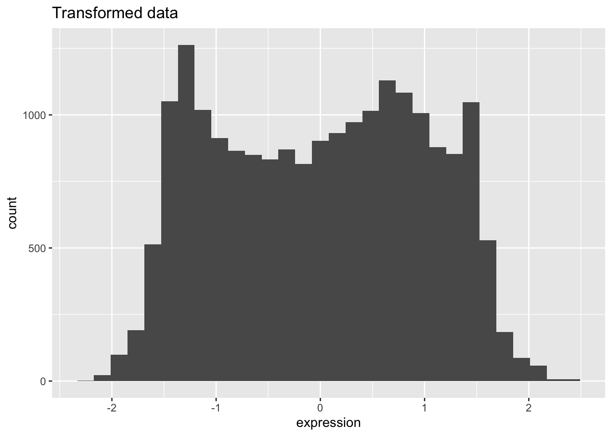
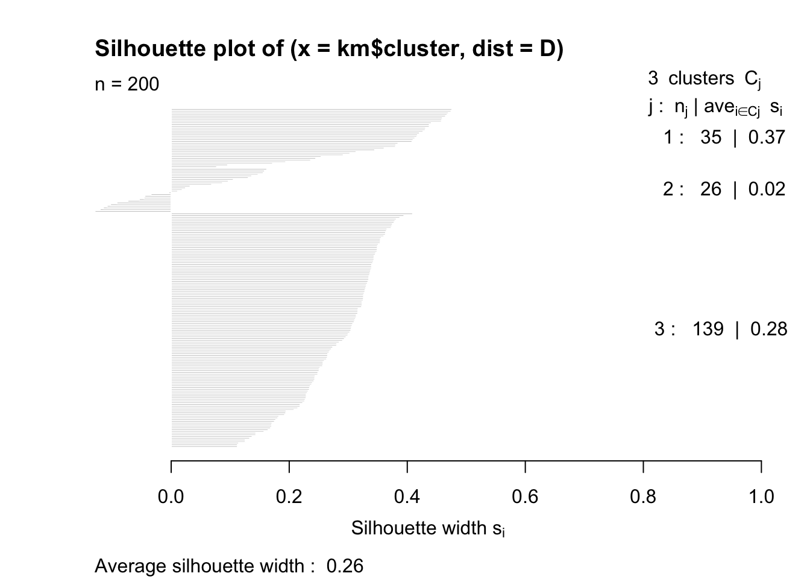

2 WEEK 1: Dimensionality reduction and unsupervised learning
2.1 Preparing the data
Unsupervised clustering is one of the most basic data analysis techniques. It allows to identify groups (or clusters) or observations (here: patients) or variables. Unsupervised means that you are not using any prior knowledge about groups of variables or associations. K-means clustering is a good example of unsupervised learning because the method categorizes sample based uniquely on the data.
In this part, we will use a dataset of gene expression data from the TCGA (The Cancer Genome Atlas) project. This project has sequenced several thousand samples from cancer patients of more than 30 cancer types. We will use a subset of this data, containing 200 samples (=patients, as columns) , for which the expression of 300 genes (= rows) has been measured.
2.1.1 Load data
We will start by reading the gene expression data. The columns are the samples and the rows are the genes. This is matrix, which allows some numerical operations to be conducted directly.
brca.exp = readRDS(url('https://www.dropbox.com/s/qububmfvtv443mq/brca.exp.rds?dl=1'))
dim(brca.exp)## [1] 100 200WARNING: If you have problem loading the data, please download this file, store it on your disk, and open it with the following command:
#brca.exp = readRDS("xxxx") # xxxx should be replaced with the path to the downloaded file in your deviceNext we will load the clinical annotation file for this gene expression data and explore it
brca.anno = readRDS(url('https://www.dropbox.com/s/9xlivejqkj77llc/brca.anno.rds?dl=1'))
head(brca.anno)## Age ER_status HER2_status Classification
## TCGA-BH-A1EO-01 68 Positive Negative Luminal A
## TCGA-E2-A14N-01 37 Negative Negative Basal-like
## TCGA-AN-A0FF-01 32 Positive Negative Luminal B
## TCGA-A2-A04V-01 39 Positive Negative Luminal A
## TCGA-AN-A0XP-01 69 Positive Negative Luminal A
## TCGA-C8-A12U-01 46 Positive Negative Luminal BSame here: if you have issues running the previous readRDS command, download this file, save it on your disk and load it with
You can check the number of samples for each tumor type using the table() function, applied to a specific column (here, there is only one column…)
##
## Equivocal Negative Positive
## 4 174 222.1.2 Data transformation
You will see that the distribution of the data is extremely squeezed due to outliers with very high or low values. We will need to make the data more homogeneous, so that our downstream analysis is not affected by these very large magnitude numbers.
We will carry out the following data processing steps. Some of these steps use rather arbitrary values, which come from visually inspecting the data!
Thresholding: cap the values to the 95th percentile
Homogenization: base-2 logarithmic transformation of the entire dataset
Scaling: standardize the data so that across genes the mean = 0 and variance = 1.
Before we start modifying the data, we will store the original data frame into a variable, so that in case of problems we can revert back to the initial data!!
Thresholding
## what is the value of the 95th percent percentile?
q95 = quantile(brca.exp,probs=0.95)
## set all values above to this value
brca.exp[brca.exp>q95] = q95Homogenization and Scaling
We will perform this step by log-transforming the data. We are able to use this operation because the data is still in a matrix.
Why do we add +1 ?
Next, we will scale the data and plot its distribution. To do this efficient, we need to convert the data to tibble first, make it tidy, and then plot.
Conversion to tibble can be done using as_tibble(brca.exp, rownames = NA), where rownames = NA is meant to keep the original rownames (in this case, gene names) in the new tibble, although they are invisible.
Check this out:
## [1] "TFF1" "C4orf7" "AGR3" "GABRP" "C1orf64"In addition, gather(key = "sample", value = "expression") converts the tibble to a long format, where “sample” represents the original column names, and “expression” represents the values present in the initial matrix.
## scaling
brca.exp = scale(brca.exp)
## plotting the density
as_tibble(brca.exp, rownames = NA) %>%
gather(key = "sample",
value = "expression") %>%
ggplot(aes(x = expression)) +
geom_histogram() +
labs(title = "Transformed data")
Compare to the density plot before these pre-processing steps using the same strategy.
as_tibble(brca.exp.original, rownames = NA) %>%
gather(key = "sample", value = "expression") %>%
ggplot(aes(x = expression)) +
geom_histogram() +
labs(title = "Untransformed data")
2.2 k-means clustering
Another widely used method for grouping observations is the k-means clustering. Now we will cluster our dataset using k-means and explore the underlying structure of the data. In this dataset, different clusters could represent different batches, different tumour subtypes, among other features.
2.2.1 Performing k-means
We use the function kmeans() in R on our matrix. You can check the options and usage in the help panel on the right. The parameter centers indicates how many clusters are requested.
Just type
kmin your console and check all results generated. Play around with thecentersparameter. See cluster assignments by typingtable(km$cluster)
2.2.2 Quality of the clustering
We can judge the quality of the clustering by computing the intra-cluster distances, i.e. the sum (squared) of all distances between pairs of objects belonging to the same cluster. This is called the within sum of squares (WSS). The better the clustering, the smaller WSS should be. However, it also automatically decreases with increasing k.
What would be WSS if we request a number of clusters equal to the number of data points? You can check what the WSS is for a particular clustering by typing
## [1] 4123.459run k-means for k=2 to k=7 clusters, and for each k check the WSS value. How does WSS evolve with increasing k?
We can also run a little loop to test different k. Loops are very important structures in any programming language. We can test a simple scenario before. Check how the output of this simple loop looks like.
## [1] 1
## [1] 2
## [1] 3
## [1] 4
## [1] 5
## [1] 6## [1] 2
## [1] 3
## [1] 4
## [1] 5
## [1] 6
## [1] 7Do you understand the difference between the 2 previous for loops? Try to make your own for loop.
Now we can make one to test k from 2 to 7:
km_wws = numeric() # we start by creating an empty vector
# To write in the position 1, we use i
# to find the 1st element, we use k_to_test[i]
for (i in 1:length(k_to_test)) {
km_wws[i] = kmeans(x=t(brca.exp),
centers = k_to_test[i])$tot.withinss
}
# We can plot the k against WSS using geom_line
ggplot() +
geom_line(aes(x = k_to_test, y = km_wws)) +
labs(x="Number of clusters K",
y="Total within-clusters sum of squares")
Do you see an obvious “elbow” or “kink” in the curve?? Another criteria for the quality of the clustering is the silhouette method.
To run the silhouette method, we need to compute the pairwise distances between all objects (i.e. patients) in the data matrix. This is done with the dist function, which can take different metrics (euclidean, …)
## compute the patient-patient distance matrix (this is why we transpose using the `t()` function)
D = dist(t(brca.exp))We now compute the silhouette for a specific k-means clustering:
## Warning: package 'cluster' was built under R version 4.3.1##
## Attaching package: 'cluster'## The following object is masked _by_ '.GlobalEnv':
##
## animalskm = kmeans(x=t(brca.exp), centers = 3, nstart = 10)
s = silhouette(km$cluster,D)
# Let us use the basic R function plot() to see the results
plot(s)
2.3 Hierarchical clustering
Clustering is a method by which we group together similar observations while separating out the dissimilar ones. We will cluster our samples from the cancer dataset to see which samples cluster together or separately. Hierarchical clustering does not generate discrete clusters of datapoints, but rather creates a dendrogram that indicates the magnitude of similitude between samples. Once again is up to the Data Scientist to decide the right amount of clusters.
2.3.1 Determine the most variable genes
When performing clustering, we usually reduce the number of genes used, as some of them are not informative. For example, genes that show a mostly constant expression across all samples will not be useful to distinguish the samples, right? One simple method is to select genes that show a high variance across all samples.
brca.exp.tibble = as_tibble(brca.exp, rownames=NA) %>%
rownames_to_column("gene")
## create a new column with the variance for all genes across all samples
brca.exp.var = brca.exp.tibble %>%
rowwise() %>%
mutate(variance = var(c_across(starts_with("TCGA"))))
# only includes the columns starting with TCGAWe now want to find the top 25% with the highest variance
## what is the 75% quantile of the variance?
q75 = quantile(brca.exp.var$variance, probs = 0.75)
q75## 75%
## 0.4934196So let us select all rows (genes) with a variance higher than or equal to q75:
## only select the genes with a variance in the top 25%
topVariantGenes <- brca.exp.var %>%
filter(variance >= q75)
print(topVariantGenes$gene)## [1] "TFF1" "C4orf7" "AGR3" "GABRP" "C1orf64" "TFF3"
## [7] "ABCC11" "PGR" "FABP7" "SERPINA11" "VGLL1" "A2ML1"
## [13] "ELF5" "PROM1" "CYP4Z2P" "SLC6A14" "CAPN8" "ABCC8"
## [19] "SYTL5" "SFRP1" "ART3" "GABBR2" "PPP1R14C" "HORMAD1"
## [25] "LOC84740"2.3.2 Computing the correlation between all patients
Let us start by filtering for only the highly variable genes. Then we can directly calculate Spearman correlation.
brca.exp.highvar.cor = brca.exp.tibble %>%
filter(gene %in% topVariantGenes$gene) %>% # from the whole list, select only high variable
select(where(is.numeric)) %>% # get only numerical columns
cor(method="spearman") # create correlation-based distance matrixIf we want to display the correlation matrix as a heatmap, we can use the pheatmap function as before:

Each cell of this heatmap represents the correlation value between the sample in the row and the sample in the column. The correlation of a sample to itself is always 1 (red diagonal).
The function automatically determines the clustering trees of the rows and columns (which are identical, since the correlation matrix is symmetrical!)
2.3.3 Including clinical annotations in the heatmap
This is a nice representation, but in order to interpret this clustering, we need to add some additional (clinical) information to interpret the clustering structure. To do this, we use an annotation data frame containing as columns a number of clinical features.
The clinical annotation is stored in the brca.anno data frame.
We can now plot again the heatmap, using the annotation dataframe to add additional information
pheatmap(brca.exp.highvar.cor,
annotation_row = brca.anno,
show_rownames = FALSE,
show_colnames = FALSE)
How would you interpret this dendrogram? Do the clusters you observe make any sense? What are the parameters by which the samples cluster together? How many meaningful clusters can you observe? Do you see any relation between the distribution of the data and your clusters ?
The function
pheatmapaccepts a parameter clustering_method to indicate alternative linkage methods; try other linkage methods (check which are available with the pheatmap help page, which can be accessed by typing?pheatmapin the console!)
2.4 Principal component analysis
We will now use principal component analysis to explore the same dataset, and identify directions (i.e. principal components) with maximal variance. Principal components analysis finds n-dimensional vectors (Principal Components) in the direction of the largest variance, thereby allowing you to describe an n-dimensional dataset with just a few dimensions.
pca = topVariantGenes %>%
select(where(is.numeric)) %>%
t() %>% # do not forget to transpose the data!
prcomp(center = FALSE, scale = FALSE) # We set these as false as we have already scaled our data
summary(pca)## Importance of components:
## PC1 PC2 PC3 PC4 PC5 PC6 PC7
## Standard deviation 3.719 2.1886 0.89796 0.86195 0.69326 0.62793 0.61645
## Proportion of Variance 0.559 0.1936 0.03259 0.03003 0.01942 0.01593 0.01536
## Cumulative Proportion 0.559 0.7526 0.78514 0.81516 0.83458 0.85052 0.86588
## PC8 PC9 PC10 PC11 PC12 PC13 PC14
## Standard deviation 0.59717 0.55556 0.53665 0.52007 0.50060 0.4900 0.45974
## Proportion of Variance 0.01441 0.01247 0.01164 0.01093 0.01013 0.0097 0.00854
## Cumulative Proportion 0.88029 0.89276 0.90440 0.91533 0.92546 0.9352 0.94370
## PC15 PC16 PC17 PC18 PC19 PC20 PC21
## Standard deviation 0.44696 0.43284 0.4009 0.39542 0.38101 0.35781 0.34271
## Proportion of Variance 0.00807 0.00757 0.0065 0.00632 0.00587 0.00517 0.00475
## Cumulative Proportion 0.95178 0.95935 0.9658 0.97216 0.97803 0.98320 0.98795
## PC22 PC23 PC24 PC25
## Standard deviation 0.30347 0.28452 0.26505 0.23424
## Proportion of Variance 0.00372 0.00327 0.00284 0.00222
## Cumulative Proportion 0.99167 0.99494 0.99778 1.00000How many principal components do you obtain? Compare this to the dimension of the matrix using the
dim()function!
What would happen if you would not transpose the matrix with t(…) in the prcomp function?
Principal components are ranked by the amount of variance that they explain. This can be visualized using a scree plot, indicating how much variance each PC explains: the standard deviation explained by each principal component is contained in the pca$sdev vector:
## [1] 3.7190077 2.1886234 0.8979609 0.8619466 0.6932587 0.6279258 0.6164472
## [8] 0.5971745 0.5555603 0.5366514 0.5200662 0.5006037 0.4899632 0.4597383
## [15] 0.4469622 0.4328397 0.4008966 0.3954205 0.3810141 0.3578084 0.3427089
## [22] 0.3034732 0.2845180 0.2650462 0.2342352We see that the standard deviation is indeed going down! Let us now plot the proportion of total variance explained by each PC
variance = (pca$sdev)^2
prop.variance = variance/sum(variance)
names(prop.variance) = 1:length(prop.variance)
# We make a data.frame from the prop.variance and the PC it corresponds to
# we can obtain the PCs using names()
data.frame(proportion = prop.variance,
PCs = as.numeric(names(prop.variance))) %>%
ggplot(aes(x = PCs, y = proportion)) +
geom_col() + # to make the barplot
labs(y='Proportion of variance') # we only plot the first 20 PCs
Principal component analysis represents each data point (here: patient) in a new space in which the coordinates are principal components. Check the following output:
We can now display the data points (i.e. patients) in the first two principal components. In addition, we can color the dots according to certain clinical parameters:
# We start by creating a dataframe and combining it with the annotation
pca_with_annot = as.data.frame(pca$x) %>%
merge(brca.anno, by = 0) # by = 0 makes use of the rownames as common information
## Now the object is in a ggplot2 friendly format
ggplot(pca_with_annot,
aes(x = PC1, y = PC2, colour = ER_status)) +
geom_point() +
scale_colour_manual(values = c("grey", "red", "navy")) # scale_colour_manual can be used to change coloursChoose different PCs for this plot. Can you still observe the two clusters corresponding to the ER_status of the patients?
2.5 EXERCISES
2.5.1 Exercise 1: Variance
For this exercise set it is given that all the data cleanup steps have been taken, you don’t need to put them in the results.
Make a heatmap of the reduced matrix “topVariantGenes” using the
pheatmap()function of thepheatmaplibrary (do not forget to select only for numerical columns). Check for parameters that might change the style of the heatmap (column names, row names, etc..). How is this heatmap different from the heatmap in section 2?Repeat the selection of top variable genes (apply the same quantile used to generate “topVariantGenes”), but using the median absolute deviation (or MAD) using the
mad()function instead of thesd()function, and store into asbrca.topMADExtract the gene names of
topVariantGenesandbrca.topMADand check how many overlap using theintersect()function.
2.5.2 Exercise 2: Hierarchical clustering
In section 2, we have computed a correlation matrix, and used this matrix to build a clustering tree.
Try different linkage methods using the clustering_method parameter to see if the topology of the dendrogram changes!
- Try building a distance matrix which would lead to different topologies of the dendrogram, depending on which linkage method is used! Show the dendrograms built with different linkage methods!
2.5.3 Exercise 3: PCA
Display the patients in the first two principal components (available in
pca_with_annot) usinggeom_point(). Color the patients in the PCA plot according toHER2_status.Color the patients in the PCA plot according to
Classification; you will probably need to define some more colors… You can check available colors here
2.5.4 Going further (expert)
Instead of performing the k-means on the whole gene expression matrix, we can run k-means on the space in which each patient is represented by the first k principal components.
Run k-means with different numbers of clusters (1-10) on the patients using the first 2, 4, 6,… principal components (i.e. the first columns of
pca_with_annot). Use the elbow method to evaluate how the within sum of squares (WSS) evolves. What is the optimal number of clusters?Represent the patients in the PCA plot as previously, but color them according to the cluster they belong to! Run kmeans with two clusters for this and merge the k-means results.